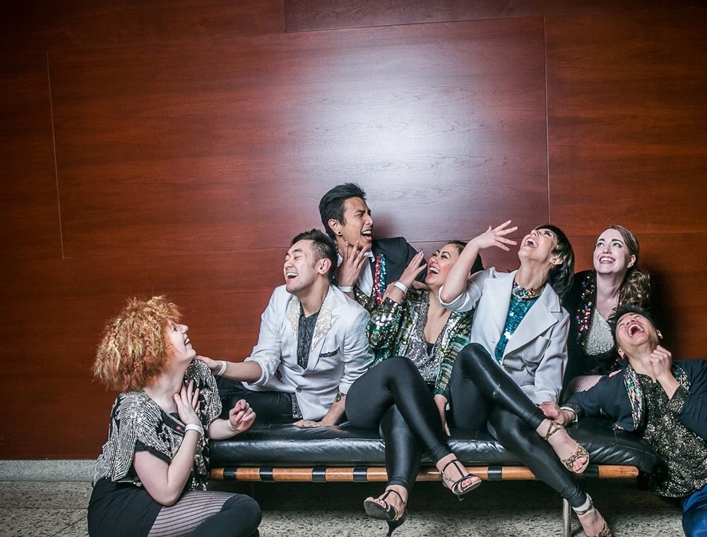

Who We Are
Konichiwaack is a group of individuals joined together by the love of glitter, disco, Waacking and cats.
Assembled by Co-Directors Amie Hasegawa and Rina Pellerin, Konichiwaack was created to bring the freestyle dance of waacking to the stage with choreographic timing, unison and precision. Our pieces use a wide range of music and honor past eras with a profound connection to the Disco era in particular.
As each of us have a respect for the roots and foundations of the original style, we hope to share the love and knowledge of waacking culture with our community – while wearing cute outfits to boot.